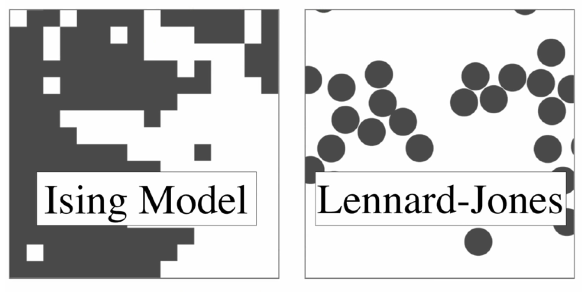
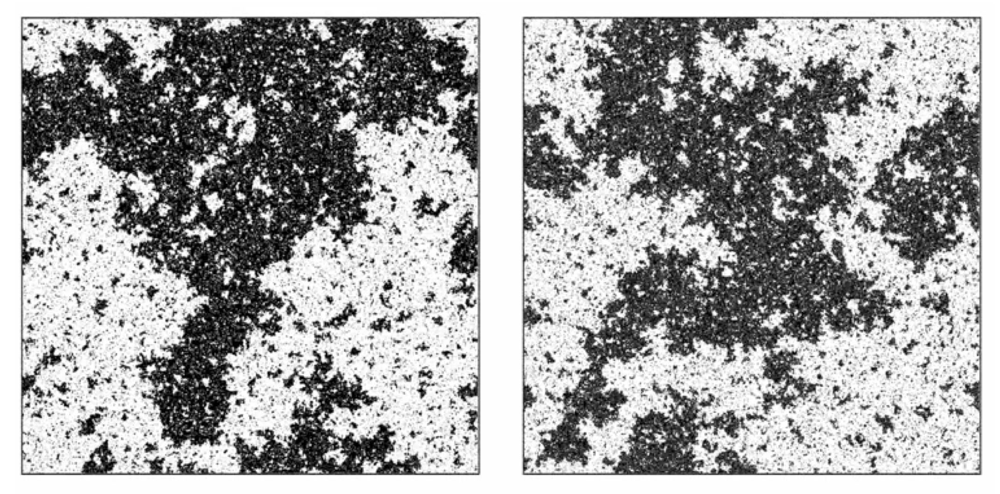

8 The Renormalisation Group Theory of Critical Phenomena
Owing the the absence of a wholly appropriate textbook for the material covered in this section, I have supplied more detailed notes than used in other parts of the unit.
The critical region is characterised by correlated microstructure on \(\underline{all}\) length-scales up to and including the correlation length. Such a profusion of degrees of freedom can only be accurately characterized by a very large number of variables. Mean field theories and approximation schemes fail in the critical region because they at best incorporate interactions among only a few spins, while neglecting correlations over larger distances. Similarly, the scaling hypothesis fails to provide more than a qualitative insight into the nature of criticality because it focuses on only one length-scale, namely the correlation length itself. Evidently a fuller understanding of the critical region may only be attained by taking account of the existence of structure on all length-scales. Such a scheme is provided by the renormalisation group method, which stands today as the cornerstone of the modern theory of critical phenomena.
8.1 The critical point: A many length scale problem
A near critical system can be characterized by three important length scales, namely
The correlation length, \(\xi\), ie the size of correlated microstructure.
Minimum length scale \(L_\textrm{ min}\), i.e. the smallest length in the microscopics of the problem, e.g. lattice spacing of a magnet or the particle size in a fluid.
Macroscopic size \(L_{max}\) eg. size of the system.
The authentic critical region is defined by a window condition:
\[L_\textrm{ max} \gg \xi \gg L_\textrm{ min}\]
The physics of this regime is hard to tackle by analytic theory because it is characterized by configurational structure on all scales between \(L_\textrm{ min}\) and \(\xi\) (in fact it turns out that the near critical configurational patterns are fractal-like, cf. fig. 5(b)). Moreover different length scales are correlated with one another, giving rise to a profusion of coupled variables in any theoretical description. The window regime is also not easily accessed by computer simulation because it entails studying very large system sizes \(L_\textrm{ max}\), often requiring considerable computing resources.
8.2 Methodology of the RG
The central idea of the renormalisation group (RG) method is a stepwise elimination of the degrees of freedom of the system on successively larger length-scales. To achieve this one introduces a fourth length scale \(L\). In contrast to the other three, which characterize the system itself, \(L\) characterises the description of the system. It may be thought of as typifying the size of the smallest resolvable detail in a description of the system’s microstructure.
Consider the Ising model arrangements displayed in Figure 4.1(a)-(c). These pictures contain all the details of each configuration shown: the resolution length \(L\) in this case has its smallest possible value, coinciding with the lattice spacing i.e. \(L=L_{\min}\). In the present context, the most detailed description is not the most useful: the essential signals with which we are concerned are hidden in a noise of relevant detail. A clue to eliminating this noise lies in the nature of the correlation length, i.e. the size of the largest droplets. The explicit form of the small scale microstructure is irrelevant to the behaviour of \(\xi\). The small scale microstructure is the noise. To eliminate it, we simply select a larger value of the resolution length (or ‘coarse-graining’ length) \(L\).
There are many ways of implementing this coarse-graining procedure. We adopt a simple strategy in which we divide our sample into blocks of side \(L\), each of which contains \(L^d\) sites, with \(d\) the space dimensions . The centres of the blocks define a lattice of points indexed by \(I=1,2,....,N/L^d\). We associate with each block lattice point centre, \(I\), a coarse-grained or block variable \(S_I(L)\) defined as the spatial average of the local variables it contains:
\[ S_I(L)=L^{-d}\sum_i^Is_i \tag{8.2}\] where the sum extends over the \(L^d\) sites in the block \(I\). The set of coarse grained coordinates \(\{S(L)\}\) are the basic ingredients of a picture of the system having spatial resolution of order \(L\).
The coarse graining operation is easily implemented on a computer. In so doing one is faced with the fact that while the underlying Ising spins can only take two possible values, the block variables \(S_I(L)\) have \(L^d+1\) possible values. Accordingly in displaying the consequences of the blocking procedure, we need a more elaborate colour convention than that used in Figure 4.1. We will associate with each block a shade of grey drawn from a spectrum ranging from black to white.
The results of coarse-graining configurations typical of three different temperatures are shown in Figure 8.1 and Figure 8.2. Two auxiliary operations are implicit in these results. The first operation is a length scaling: the lattice spacing on each blocked lattice has been scaled to the same size as that of the original lattice, making possible the display of correspondingly larger portions of the physical system. The second operation is a variable scaling: loosely speaking, we have adjusted the scale (‘contrast’) of the block variable so as to match the spectrum of block variable values to the spectrum of shades at our disposal.
Consider first a system marginally above its critical point at a temperature \(T\) chosen so that the correlation length \(\xi\) is approximately 6 lattice spacing units. A typical arrangement (without coarse-graining) is shown in Figure 8.1(ai). The succeeding figures, Figure 8.1(aii) and Figure 8.1(aiii), show the result of coarse-graining with block sizes \(L=4\) and \(L=8\), respectively. A clear trend is apparent. The coarse-graining amplifies the consequences of the small deviation of \(T\) from \(T_c\). As \(L\) is increased, the ratio of the size of the largest configurational features (\(\xi\)) to the size of the smallest (\(L\)) is reduced. The ratio \(\xi/L\) provides a natural measure of how ‘critical’ is a configuration. Thus the coarse-graining operation generates a representation of the system that is effectively less critical the larger the coarse-graining length. The limit point of this trend is the effectively fully disordered arrangement shown in Figure 8.1(aiii) and in an alternative form in Figure 8.1(aiv), which shows the limiting distribution of the coarse grained variables, averaged over many realizations of the underlying configurations: the distribution is a Gaussian which is narrow (even more so the larger the \(L\) value) and centred on zero. This limit is easily understood. When the system is viewed on a scaled \(L\) larger than \(\xi\), the correlated microstructure is no longer explicitly apparent; each coarse-grained variable is essentially independent of the others.
A similar trend is apparent below the critical point. Figure 8.1(bi) show a typical arrangement at a temperature \(T<T_c\) such that again \(\xi\) is approximately \(6\) lattice spacings. Coarse-graining with \(L=4\) and \(L=8\) again generates representations which are effectively less critical (Figure 8.1(bii) and (biii)). This time the coarse-graining smoothes out the microstructure which makes the order incomplete. The limit point of this procedure is a homogeneously ordered arrangement in which the block variables have a random (Gaussian) distribution centred on the order parameter (Figure 8.1(biv)).
Consider now the situation at the critical point. Figure 8.2(ai) shows a typical arrangement; Figure 8.2(aii) and (aiii) show the results of coarse-graining with \(L=4\) and \(L=8\) respectively. Since the \(\xi\) is as large as the system itself the coarse graining does not produce less critical representations of the physical system: each of the figures displays structure over all length scales between the lower limit set by \(L\) and the upper limit set by the size of the display itself. A limiting trend is nevertheless apparent. Although the \(L=4\) pattern is qualitatively quite different from the pattern of the local variables, the \(L=4\) and \(L=8\) patterns display qualitatively similar features. These similarities are more profound than is immediately apparent. A statistical analysis of the spectrum of \(L=4\) configurations (generated as the local variables evolve in time) show that it is almost identical to that of the \(L=8\) configurations (given the block variable scaling). The implication of this limiting behaviour is clear: the patterns formed by the ordering variable at criticality look the same (in a statistical sense) when viewed on all sufficiently large length scales.
Let us summarize. Under the coarse-graining operation there is an evolution or flow of the system’s configuration spectrum. The flow tends to a limit, or fixed point, such that the pattern spectrum does not change under further coarse-graining. These scale-invariant limits have a trivial character for \(T>T_c\), (a perfectly disordered arrangement) and \(T< T_c\), (a perfectly ordered arrangement). The hallmark of the critical point is the existence of a scale-invariant limit which is neither fully ordered nor fully disordered but which possesses structure on all length scales.
8.3 Universality and Scaling
Equipped with the coarse-graining technique, we now address the universality phenomenon. We aim to understand how it is that systems that are different microscopically can nevertheless display critical point behaviour which (in certain respects) is quantitatively identical.
To obtain initial insight we introduce a spin-1 Ising model in which the spins take on three values (\(s_i=1,0,-1\)), in contrast to the two values (\(s_i=1,-1\)) of the spin-1/2 Ising model. The two models have properties which are different: for example, \(T_c\) for the three-state model is some \(30\%\) lower than that of the two-state model (for the same coupling \(J\)). However, there is abundant evidence that the two models have the same universal properties.
Let us explore what is the same and what is different in the configurations of the two models at criticality. The configurations of the local variables \(s_i\) are clearly qualitatively different for the two models. Now consider the coarse-grained configurations (with \(L=4\) and \(L=8\) respectively) for the three-state model at the critical point. We have already seen that the coarse-graining operation bears the configuration spectrum of the critical two-state Ising model to a non-trivial scale-invariant limit. It is scarcely surprising that the same is true for the three-state model. What is remarkable is that the two limits are the same! This is expressed in Figure 8.2(iv), which shows the near coincidence of the distribution of block variables (grey-levels) for the two different coarse-graining lengths. Thus the coarse-graining erases the physical differences apparent in configurations where the local behaviour is resolvable, and exposes a profound configurational similarity.
8.3.1 Fluid-magnet universality
Let us now turn to fluid-magnet universality. In a magnet, the relevant configurations are those formed by the coarse-grained magnetisation (the magnetic moment averaged over a block of side \(L\)). In a fluid, the relevant configurations are those of the coarse-grained density (the mass averaged over a block if side \(L\)) or more precisely, its fluctuation from its macroscopic average (Figure 8.3). The patterns in the latter (bubbles of liquid or vapour) may be matched to pattern in the former (microdomains of the magnetisation), given appropriate scaling operations to camouflage the differences between the length scales and the differences between the variable scales.
The results is illustrated in Figure 8.4. See also the full demonstration on YouTube.


8.4 Near critical scaling
The similarity of coarse-grained configurations of different systems is not restricted to the critical temperature itself. Suppose we have a two state spin model and a three state spin model each somewhat above their critical points at reduced temperature \(t\). The two systems will have somewhat different correlation lengths, \(\xi_1\) and \(\xi_2\) say. Suppose however, we choose coarse-graining lengths \(L_1\) for \(L_2\) for the two models such that \(\xi_1/L_1=\xi_2/L_2\). We adjust the scales of the block variables (our grey level control) so that the typical variable value is the same for the two systems. We adjust the length scale of the systems (stretch or shrink our snapshots) so that the sizes of the minimum-length-scale structure (set by \(L_1\) and \(L_2\)) looks the same for each system. Precisely what they look like depends upon our choice of \(\xi/L\).
8.5 Universality classes
Coarse graining does not erase all differences between the physical properties of critical systems. Differences in the space dimension \(d\) of two critical systems will lead to different universal properties such as critical exponents. Thus, for instance, the critical exponents of the 2D magnet, match those of the 2d fluid, but they are different to those of 3d magnets and fluids.
In fact the space dimension is one of a small set of qualitative features of a critical system which are sufficiently deep-seated to survive coarse graining and which together serve to define the system’s universal behaviour, or universality class. The constituents of this set are not all identifiable a priori. They include the number of components \(n\) of the order parameter. Up to now, we have only considered order parameters which are scalar (for a fluid the density, for a magnet the magnetisation), for which \(n=1\). In some ferromagnets, the order parameter may have components along two axes, or three axes, implying a vector order parameter, with \(n=2\) or \(n=3\), respectively. It is clear that the order-parameter \(n\)-value will be reflected in the nature of the coarse-grained configurations, and thus in the universal observables they imply.
A third important feature which can change the universality class of a critical system is the range of the interaction potential between its constituent particles. Clearly for the Ising model, interactions between spins are inherently nearest neighbour in character. Most fluids interact via dispersion forces (such as the Lennard-Jones potential) which is also short ranged owing to the \(r^{-6}\) attractive interaction. However some systems have much longer ranged interactions. Notable here are systems of charged particles which interact via a Coulomb potential. The long ranged nature of the Coulomb potential (which decays like \(r^{-1}\)) means that charged systems often do not have the same critical exponents as the Ising model and fluid.
8.6 Critical exponents
We consider now how the critical exponents, may be computed via the coarse-graining procedure. In what follows we will refer only to the behaviour of a single typical coarse grained variable, which we shall denote \(S(L)\). We suppose that \(t\) is sufficiently small that \(\xi \gg L_\textrm{ min}\). Universality and scaling may be expressed in the claim that, for any \(L\) and \(t\), scale factors \(a(L)\) and \(b(L)\) may be found such that the probability distribution \(p(S(L),t)\) can be written in the form
\[ p(S(L),t)=b(L)\tilde{p}(b(L)S(L),a(L)t) \tag{8.3}\] where \(\tilde{p}\) is a function unique to a universality class. The role of the scale factors \(a\) and \(b\) is to absorb the basic non-universal scales identified in Section 8.2. The critical exponents are implicit in the \(L\)-dependence of these scale factors. Specifically one finds:
\[ \begin{aligned} a(L)&=&a_0L^{1/\nu} \\ b(L)&=&b_0L^{\beta/\nu} \end{aligned} \tag{8.4}\] where the amplitudes \(a_0\) and \(b_0\) are system specific (non-universal) constants.
These results state that the critical exponents (in the form \(1/\nu\) and \(\beta/\nu\)) characterize the ways in which the configuration spectrum evolves under coarse-graining. Consider, first the exponent ratio \(\beta/\nu\). Precisely at the critical point, there is only one way in which the coarse-grained configurations change with \(L\): the overall scale of the coarse-grained variable (the black-white contrast in our grey scale representation) is eroded with increasing \(L\). Thus the configurations of coarse-graining length \(L_1\) match those of a larger coarse-graining length \(L_2\) only if the variable scale in the latter configurations is amplified. The required amplification follows from Equation 8.3 and and Equation 8.4: it is
\[ \frac{b(L_2)}{b(L_1)}=\left(\frac{L_2}{L_1}\right)^{\beta/\nu}\:. \] The exponent ratio \(\beta/\nu\) thus controls the rate at which the scale of the ordering variable decays with increasing coarse-graining length.
Consider now the exponent \(1/\nu\). For small but non-zero reduced temperature (large but finite \(\xi\)) there is second way in which the configuration spectrum evolves with \(L\). As noted previously, coarse graining reduces the ratio of correlation length to coarse-graining length, and results in configurations with a less critical appearance. More precisely, we see from Equation 8.3 that increasing the coarse graining length from \(L_1\) to \(L_2\) while keeping the reduced temperature constant has the same effect on the configuration spectrum as keeping coarse-graining length constant which amplifying the reduced temperature \(t\) by a factor
\[ \frac{a(L_2)}{a(L_1)}=\left(\frac{L_2}{L_1}\right)^{1/\nu}\:. \] One may think of the combination \(a(L)t\) as a measure of the effective reduced temperature of the physical system viewed with resolution length \(L\). The exponent \(1/\nu\) controls the rate at which the effective reduced temperature flows with increasing coarse-graining length.
8.7 Finite-size scaling
<<<<<<< HEADWe can exploit the fact that the scale factors \(a(L)\) and \(b(L)\) depend on critical exponents to estimate the values of these exponents using computer simulation. Consider the average of the block variable \(S(L)\). Consideration of eq. [eq:blkvar] shows that this is non other than the value of the order parameter \(Q\), measured over a block of side \(L\). Thus from the definition of an average
\[Q(L,t)=\bar {S}(L,t)=\int S(L)p(S(L),t)dS(L)\] where \(p(S(L))\) is the probability distribution of \(S(L)\).
Making use of the representation of eq. [eq:blocks], we then have that
\[Q(L,t) = \int b(L)S(L)\tilde{p}(b(L)S(L),a(L)t)dS(L)\]
=======We can exploit the fact that the scale factors \(a(L)\) and \(b(L)\) depend on critical exponents to estimate the values of these exponents using computer simulation. Consider the average of the block variable \(S(L)\). Consideration of Equation 8.2 shows that this is non other than the value of the order parameter \(Q\), measured over a block of side \(L\). Thus from the definition of an average
\[ Q(L,t)=\bar {S}(L,t)=\int S(L)p(S(L),t)dS(L) \] where \(p(S(L))\) is the probability distribution of \(S(L)\).
Making use of the representation of Equation 8.3, we then have that
\[Q (L,t) = \int b(L)S(L)\tilde{p}(b(L)S(L),a(L)t)dS(L) \tag{8.5}\]
>>>>>>> bad484ed1bbe56d9323e3062b7288d18197b6227To integrate this we need to change the integration variable from \(S(L)\) to \(b(L)S(L)\). We have \(d(b(L)S(L))=b(L)dS(L)\) since \(b(L)\) does not fluctuate. Thus
\[\begin{aligned} Q(L,t) =& b^{-1}(L)\int b(L)S(L)\tilde{p}(b(L)S(L),a(L)t)d(b(L)S(L))\nonumber\\ =& b^{-1}(L)f(a(L)t)\nonumber\\ =& b_0L^{-\beta/\nu}f(a_0L^{1/\nu}t) \end{aligned}\]where \(f\) is a universal function (defined as the first moment of \(\tilde{p}(x,y)\) with respect to \(y\)).
<<<<<<< HEADThe above results provide a method for determining the critical exponent ratios \(\beta/\nu\) and \(1/\nu\) via computer simulations of near critical systems. For instance, at the critical point (\(t=0\)) and for finite block size, \(Q(L,0)\) will not be zero (the \(T\) at which Q vanishes for finite \(L\) is above the true \(T_c\), cf. sec 8.2). However, we know that its value must vanish in the limit of infinite \(L\); it does so like
\[Q(L,0)=b_0L^{-\beta/\nu}f(0)\equiv Q_0L^{-\beta/\nu}\]
=======The above results provide a method for determining the critical exponent ratios \(\beta/\nu\) and \(1/\nu\) via computer simulations of near critical systems. For instance, at the critical point (\(t=0\)) and for finite block size, \(Q(L,0)\) will not be zero (the \(T\) at which Q vanishes for finite \(L\) is above the true \(T_c\), cf. Section 7.2. However, we know that its value must vanish in the limit of infinite \(L\); it does so like
\[Q(L,0)=b_0L^{-\beta/\nu}f(0)\equiv Q_0L^{-\beta/\nu} \tag{8.6}\]
>>>>>>> bad484ed1bbe56d9323e3062b7288d18197b6227Thus by studying the critical point \(L\) dependence of \(Q\) we can estimate \(\beta/\nu\). A similar approach in which we study two block sizes \(L\), and tune \(t\) separately in each case so that the results for \(QL^{\beta/\nu}\) are identical provides information on the value of \(1/\nu\).
8.8 The effective coupling viewpoint of the renormalization group (non examinable)
Let us begin by returning to our fundamental Equation 2.1, which we rewrite as
\[p = Z^{-1}e^{-{\cal H}}\] where \({\cal H}\equiv E/k_BT\).
The first step is then to imagine that we generate, by a computer simulation procedure for example, a sequence of configurations with relative probability \(\exp(-{\cal H})\). We next adopt some coarse-graining procedure which produces from these original configurations a set of coarse-grained configurations. We then ask the question: what is the energy function \({\cal H}^\prime\) of the coarse-grained variables which would produce these coarse-grained configurations with the correct relative probability \(\exp(-{\cal H}^\prime)\)? Clearly the form of \({\cal H}^\prime\) depends on the form of \({\cal H}\) thus we can write symbolically
\[{\cal H}^\prime=R({\cal H}) \tag{8.7}\]
The operation \(R\), which defines the coarse-grained configurational energy in terms of the microscopic configurational energy function is known as a renormalisation group transformation (RGT). What it does is to replace a hard problem by a less hard problem. Specifically, suppose that our system is near a critical point and that we wish to calculate its large-distance properties. If we address this task by utilizing the configurational energy and appealing to the basic machinery of statistical mechanics set out in Equation 2.1 and Equation 2.2, the problem is hard. It is hard because the system has fluctuations on all the (many) length scales intermediate between the correlation length \(\xi\) and the minimum length scale \(L_\textrm{min}\).
However, the task may instead be addressed by tackling the coarse-grained system described by the energy \({\cal H}^\prime\). The large-distance properties of this system are the same as the large-distance properties of the physical system, since coarse-graining operation preserves large-scale configurational structure. In this representation the problem is a little easier: while the \(\xi\) associated with \({\cal H}^\prime\) is the same as the \(\xi\) associated with \({\cal H}\), the minimum length scale of \({\cal H}^\prime\) is bigger than that of \({\cal H}\). Thus the statistical mechanics of \({\cal H}^\prime\) poses a not-quite-so-many-length-scale problem, a problem which is effectively a little less critical and is thus a little easier to solve. The benefits accruing from this procedure may be amplified by repeating it. Repeated application of \(R\) will eventually result in a coarse- grained energy function describing configurations in which the \(\xi\) is no bigger than the minimum length scale. The associated system is far from criticality and its properties may be reliably computed by any of a wide variety of approximation schemes. These properties are the desired large-distance properties of the physical system. As explicit reference to fluctuations of a given scale is eliminated by coarse-graining, their effects are carried forward implicitly in the parameters of the coarse-grained energy.
In order to setup the framework for a simple illustrative example, let is return to the lattice Ising model for which the energy function depended only on the product of nearest neighbour spins. The coefficient of this product in the energy is the exchange coupling, \(J\). In principle, however, other kinds of interactions are also allowed; for example, we may have a product of second neighbour spins with strength \(J_2\) or, perhaps, a product of four spins (at sites forming a square whose side is the lattice spacing), with strength \(J_3\). Such interactions in a real magnet have their origin in the quantum mechanics of the atoms and electrons and clearly depend upon the details of the system. For generality therefore we will allow a family of exchange couplings \(J_1\),\(J_2\),\(J_3,\dots\), or \(J_a, a = 1,2,\dots\) In reduced units, the equivalent coupling strengths are \(K_a =J_a/k_BT\). Their values determine uniquely the energy for any given configuration.
We note that it is not only useful to allow for arbitrary kinds of interactions: if we wish to repeat the transformation several (indeed many) times, it is also necessary because even if we start with only the nearest neighbour coupling in \({\cal H}\) the transformation will in general produce others in \({\cal H}^\prime\).
Now consider the coarse-graining procedure. Let us suppose that this procedure takes the form of a ‘majority rule’ operation in which the new spins are assigned values \(+1\) or \(-1\) according to the signs of the magnetic moments of the blocks with which they are associated. The new energy function \({\cal H}^\prime\) will be expressible in terms of some new coupling strengths \(K^\prime\) describing the interactions amongst the new spin variables (and thus, in effect, the interactions between blocks of the original spin variables). The RGT simply states that these new couplings depend on the old couplings: \(K_1^\prime\) is some function \(f_1\) of all the original couplings, and generally
\[K^\prime_a=f_a(K_1,K_2,\dots) =f_a({\bf K}),~~~~ a= 1, 2,\dots \tag{8.8}\] where K is shorthand for the set \(K_1, K_2,\dots\)
8.8.1 A simple example
This example illustrates how one can perform the RG transformation Equation 8.8 directly, without recourse to a ‘sequence of typical configurations’. The calculation involves a very crude approximation which has the advantage that it simplifies the subsequent analysis.

Consider an Ising model in two dimensions, with only nearest neighbour interactions as shown in Figure 8.5. We have divided the spins into two sets, the spins \(\{s^\prime\}\) form a square lattice of spacing \(2\), the others being denoted by \(\{\tilde{s}\}\). One then defines an effective energy function \({\cal H^\prime}\) for the \(s^\prime\) spins by performing an average over all the possible arrangements of the \(\tilde{s}\) spins
\[ \exp(-{\cal H}^\prime)=\sum_{\{\tilde {s}\}} \exp(-{\cal H}). \tag{8.9}\]
This particular coarse-graining scheme is called ‘decimation’ because a certain fraction (not necessarily one-tenth!) of spins on the lattice is eliminated. This formulation of a new energy function realizes two basic aims of the RG method: the long-distance physics of the ‘original’ system, described by \({\cal H}\), is contained in that of the ‘new’ system, described by \({\cal H}^\prime\) (indeed the partition functions are the same as one can see by summing both sides over \(s^\prime\)) and the new system is further from critically because the ratio of \(\xi\) to lattice spacing (‘minimum length scale’) has been reduced by a factor of \(1/2\) (the ratio of the lattice spacings of the two systems). We must now face the question of how to perform the configuration sum in Equation 8.9. This cannot in general be done exactly, so we must resort to some approximation scheme. The particular approximation which we invoke is the high temperature series expansion. In its simplest mathematical form, since \({\cal H}\) contains a factor \(1/k_BT\), it involves the expansion of \(\exp(-{\cal H})\) as a power series:
\[\exp(-{\cal H}/k_BT)=1-{\cal H}/k_BT +\frac{1}{2!}({\cal H}/k_BT)^2+..... \tag{8.10}\]
We substitute this expansion into the right hand side of Equation 8.9 and proceed to look for terms which depend on the \(s^\prime\) spins after the sum over the possible arrangements of the \(\tilde{s}\) spins is performed. This sum extends over all the possible (\(\pm 1\)) values of all the \(\tilde{s}\) spins. The first term (the 1) in the expansion of the exponential is clearly independent of the values of the \(s^\prime\) spins. The second term (\({\cal H}\)) is a function of the \(s^\prime\) spins, but gives zero when the sum over the \(s^\prime\) spins is performed because only a single factor of any \(s^\prime\) ever appears, and \(+ 1 - 1 = 0\). The third term (\({\cal H}^2/2\)) does contribute. If one writes out explicitly the form of \({\cal H}^2/2\) one finds terms of the form \(K^2s_1^\prime\tilde{s}\tilde{s}s_2^\prime=K^2s_1^\prime s_2^\prime\), where \(s_1^\prime\) and \(s_2^\prime\) denote two spins at nearest neighbour sites on the lattice of \(s^\prime\) spins and \(\tilde{s}\) is the spin (in the other set) which lies between them. Now, in the corresponding expansion of the left hand side of Equation 8.9, we find terms of the form \(K^\prime s_1^\prime s_2^\prime\), where \(K^\prime\) is the nearest neighbour coupling for the \(s^\prime\) spins. We conclude (with a little more thought than we detail here) that
\[ K^\prime=K^2 \tag{8.11}\]
Of course many other terms and couplings are generated by the higher orders of the high temperature expansion and it is necssary to include these if one wishes reliable values for the critical temperature and exponents, However, our aim here is to use this simple calculation to illustrate the RG method. Let us therefore close our eyes, forget about the higher order terms and show how the RGT Equation 8.11 can be used to obtain information on the phase transition.
The first point to note is that that mathematically Equation 8.11 has the fixed point \(K^*= 1\); if \(K= 1\) then the new effective coupling \(K^\prime\) has the same value \(1\). Further, if \(K\) is just larger than \(1\), then \(K^\prime\) is larger than \(K\), i.e. further away from \(1\). Similarly, if \(K\) is less than \(1\), \(K^\prime\) is less than \(K\). We say that the fixed point is unstable: the flow of couplings under repeated iteration of Equation 8.11 is away from the fixed point, as illustrated in Figure 8.6. The physical significance of this is as follows: suppose that the original system is at its critical point so that the ratio of \(\xi\) to lattice spacing is infinite. After one application of the decimation transformation, the effective lattice spacing has increased by a factor of two, but this ratio remains infinite; the new system is therefore also at its critical point. Within the approximations inherent in Equation 8.11, the original system is an Ising model with nearest neighbour coupling \(K\) and the new system is an Ising model with nearest neighbour coupling \(K^\prime\). If these two systems are going to be at a common critically, we must identify \(K^\prime= K\). The fixed point \(K^*= 1\) is therefore a candidate for the critical point \(K_c\), where the phase transition occurs. This interpretation is reinforced by considering the case where the original system is close to, but not at, criticality. Then \(\xi\) is finite and the new system is further from critically because the ratio of \(\xi\) to lattice spacing is reduced by a factor of two. This instability of a fixed point to deviations of \(K\) from \(K^*\) is a further necessary condition for its interpretation as a critical point of the system. In summary then we make the prediction
\[ K_c=J/k_BT_c=1 \tag{8.12}\]
We can obtain further information about the behaviour of the system close to its critical point. In order to do so, we rewrite the transformation (Equation 8.11) in terms of the deviation of the coupling from its fixed point value. A Taylor expansion of the function \(K^\prime=K^2\) yields
\[\begin{aligned} K^\prime =& (K^*)^2 +(K-K^*)\left.\frac{\partial K^\prime}{\partial K}\right|_{K=K^*}+\frac{1}{2}(K-K^*)^2\left.\frac{\partial^2 K^\prime}{\partial K^2}\right|_{K=K^*}+\ldots\nonumber\\ K^\prime - K^* =& 2 (K - K^*)+ (K - K^*)^2 \end{aligned}\]where in the second line we have used the fact that the first derivative evaluates to \(2K^*=2\) and \((K^*)^2=K^*\).
For a system sufficiently close to its critical temperature the final term can be neglected. The deviation of the coupling from its fixed point (critical) value is thus bigger for the new system than it is for the old by a factor of two. This means that the reduced temperature is also bigger by a factor of two:
\[t^\prime= 2t \tag{8.13}\]
But \(\xi\) (in units of the appropriate lattice spacing) is smaller by a factor of \(1/2\):
\[\xi^\prime= \xi/2 \tag{8.14}\]
Thus, when we double \(t\), we halve \(\xi\), implying that
\[\xi\propto t^{-1} \tag{8.15}\]
for \(T\) close to \(T_c\). Thus we see that the RGT predicts scaling behaviour with calculable critical exponents. In this simple calculation we estimate the critical exponent \(\nu=1\) for the square lattice Ising model. This prediction is actually in agreement with the exactly established value. The agreement is fortuitous- the prediction in Eq. refeq:Kc for \(K_c\), is larger than the exactly established value by a factor of more than two. In order to obtain reliable estimates more sophisticated and systematic methods must be used.
The crude approximation in the calculation above produced a transformation, Equation 8.11, involving only the nearest neighbour coupling, with the subsequent advantages of simple algebra. We pay a penalty for this simplicity in two ways: the results obtained for critical properties are in rather poor agreement with accepted values, and we gain no insight into the origin of universality.
8.8.2 Universality and scaling
In order to expose how universality can arise, we should from the start allow for several different kinds of coupling \(J_a\), and show how the systems with different \(J_a\) can have the same critical behaviour.
Figure 8.7 is a representation of the space of all coupling strengths \(K_a\) in the energy function \({\cal H}/k_BT\). This is of course actually a space of infinite dimension, but representing three of these, as we have done, enables us to illustrate all the important aspects. First let us be clear what the points in this space represent. Suppose we have some magnetic material which is described by a given set of exchange constants \(J_1,J_2,J_3.....\) As the temperature \(T\) varies, the coupling strengths \(K_a=J_a/k_BT\) trace out a straight line, or ray, from the origin of the space in the direction (\(J_1,J_2,J_3 ....\) ). Points on this ray close to the origin represent this magnet at high temperatures, and conversely points far from the origin represent the magnet at low temperatures. The critical point of the magnet is represented by a specific point on this ray, \(K_a= J_a/k_BT, a= 1,2,\dots\) The set of critical points on all of the possible rays forms a surface, the critical surface. Formally, it is defined by the set of all possible models (of the Ising type) which have infinite \(\xi\). It is shown schematically as the shaded surface in Figure 8.7. (In the figure it is a two-dimensional surface; more generally it has one dimension less than the full coupling constant space, dividing all models into high and low temperature phases.)
Our immediate goal then is to understand how the RGT can explain why different physical systems near this critical surface have the same behaviour. Let us turn now to the schematic representation of the RG flow in Figure 8.7. Suppose we start with a physical system, with coupling strengths \(K_a, a= 1,2, \dots\). What the RGT does is generate a new point in the figure, at the coupling strengths \(K_a^{(1)}=f_a({\bf K})\); these are the couplings appearing in the effective energy function describing the coarse-grained system. If we repeat the transformation, the new energy function has coupling strengths \(K_a^{(2)}=f_a({\bf K})\). Thus repeated application of the transformation generates a flow of points in the figure: \({\bf K\to K^{(1)}\to\dots\to K^{(n)}}\) where the superscript (\(n\)) labels the effective couplings after \(n\) coarse-graining steps. if the change in coarse-graining scale is \(b\) (\(> 1\)) at each step, the total change in coarse-graining scale is \(b^n\) after \(n\) steps. In the process, therefore, the ratio of \(\xi\) to coarse-graining scale is reduced by a factor of \(b^{-n}\). The dots in Figure 8.7 identify three lines of RG flow starting from three systems differing only in their temperature. (The flow lines are schematic but display the essential features revealed in detailed calculations.)
Consider first the red dots which start from the nearest neighbour Ising model at its critical point. The ratio of \(\xi\) to coarse-graining scale is reduced by a factor b at each step, but, since it starts infinite, it remains infinite after any finite number of steps. In this case we can in principle generate an unbounded number of dots, \({\bf K^{(1)}, K^{(2)},\dots,K^{(n)}}\), all of which lie in the critical surface. The simplest behaviour of such a sequence as \(n\) increases is to tend to a limit, \(K^*\), say. In such a case
\[K^*_a=f_a(K^*)~~~~ a= 1,2 ..... \tag{8.16}\]
This point \({\bf K^*} \equiv K_1^*, K_2^*, \dots\) is therefore a fixed point which lies in the critical surface.
By contrast, consider the same magnet as before, now at temperature \(T\) just greater than \(T_c\), its couplings \(K_a\), will be close to the first red dot (in fact they will be slightly smaller) and so will the effective couplings \(K_a^{(1)},K_2^{(2)},\dots\) of the corresponding coarse-grained systems. The new flow will therefore appear initially to follow the red dots towards the same fixed point. However, the flow must eventually move away from the fixed point because each coarse-graining now produces a model further from criticality. The resulting flow is represented schematically by one set of black dots. The other set of black dots shows the expected flow starting from the same magnet slightly below its critical temperature.
We are now in a position to understand both universality and scaling within this framework. We will suppose that there exists a single fixed point in the critical surface which sucks in all flows starting from a point in that surface. Then any system at its critical point will exhibit large-length scale physics (large-block spin behaviour) described by the single set of fixed point coupling constants. The uniqueness of this limiting set of coupling constants is the essence of critical point universality. It is, of course, the algebraic counterpart of the unique limiting spectrum of coarse-grained configurations, discussed in Section 8.5. Similarly the scale-invariance of the critical point configuration spectrum (viewed on large enough length scales) is expressed in the invariance of the couplings under iteration of the transformation (after a number of iterations large enough to secure convergence to the fixed point).
To understand the behaviour of systems near but not precisely at critically we must make a further assumption (again widely justified by explicit studies). The flow line stemming from any such system will, we have argued, be borne towards the fixed point before ultimately deviating from it after a number of iterations large enough to expose the system’s noncritical character. We assume that (as indicated schematically in the streams of red and blue lines in Figure 8.7 the deviations lie along a single line through the fixed point, the direction followed along this line differing according to the sign of the temperature deviation \(T-T_c\). Since any two sets of coupling constants on the line (on the same side of the fixed point) are related by a suitable coarse-graining operation, this picture implies that the large-length-scale physics of all near- critical systems differs only in the matter of a length scale. This is the essence of near-critical point universality.
8.9 Summary of main points
As this is quite a long chapter let us summarise the main points:
Limitations of conventional theories: Mean field theories and the scaling hypothesis are insufficient in the critical region due to their neglect of correlations across all relevant length scales.
Critical region characteristics: Near-critical systems exhibit correlated microstructure on all length scales up to the correlation length. The complexity of this structure makes both analytical and computational study challenging.
Relevant length scales:
- Correlation length (\(\xi\))
- Minimum microscopic scale (\(L_\textrm{min}\))
- Macroscopic system size (\(L_\textrm{max}\))
Window Condition for criticality: The true critical regime satisfies \(L_\textrm{max} \gg \xi \gg L_\textrm{min}\), encompassing a broad range of scales where complex, often fractal-like, structures are present.
Renormalisation Group (RG) methodology: RG involves the stepwise elimination of degrees of freedom by coarse-graining the system over increasing length scales. A fourth scale, \(L\), represents the resolution at which the system is described.
Effect of coarse-graining: Coarse-graining changes the effective reduced temperature, captured by the relation \(a(L)t\), where \(a(L)\) scales with \(L\) as \(L^{1/\nu}\). This helps describe how critical configurations evolve with resolution.
Universality:
- Coarse-graining reveals that microscopically different systems can exhibit identical critical behavior when observed at large scales.
- The concept of universality explains why disparate systems, such as magnets and fluids, can show the same critical exponents and scaling laws.
- Critical behavior depends primarily on general features like dimensionality and symmetry, rather than microscopic details.
Finite-Size scaling:
- The average block variable \(Q(L,t)\) is related to block size \(L\) and reduced temperature \(t\) through scaling relations. Computer simulations exploit this to extract scaling functions and the values of critical exponents.